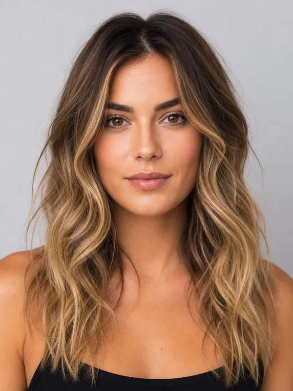

Best hairstyles for an oval face
Oval faces have balanced proportions, so almost anything works — the goal is simply to keep that balance and avoid hiding it.
For women
- Curtain bangs & long layers
- Blunt bob or a sleek lob
- Balayage and money-piece colour
For men
- Textured crop or quiff
- Pompadour
- Classic crew cut
Go easy on: heavy, face-covering styles that hide your balanced proportions.